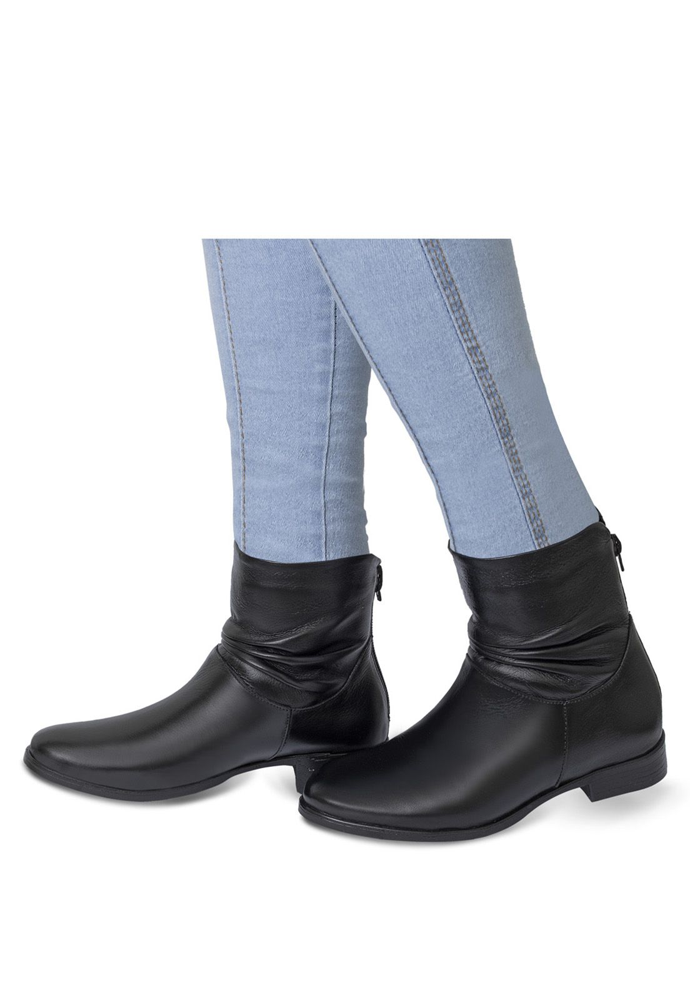

Bota Feminina
Disponivel nas cores: preto
As botas sao calcados queridinhos do inverno, pois alem de serem estilosas, sao super quentinhas e confortaveis. Aposte em modelos com salto para um visual de atitude e personalidade ou modelos com cano baixo e sola para compor looks despojados e casuais. A dica e investir em um modelo neutro e confortavel, que nao tem erro!
Tamanho 34 ao 37
Todos os direitos reservados.